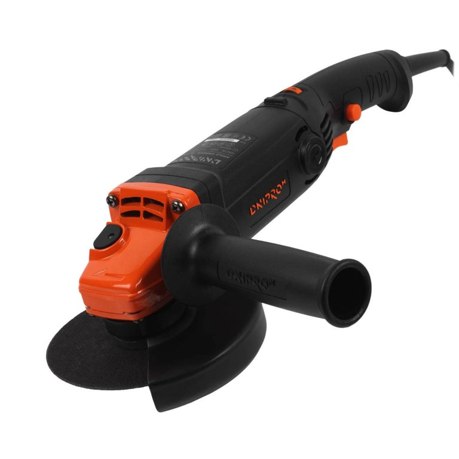

Характеристики
Диаметр круга 125 мм
Количество оборотов 4000 - 11000 об/мин
Регулятор оборотов есть
Рабочая мощность 1050 Вт
Номинальная мощность 860 Вт
Максимальная мощность 1250 Вт
Поддержка оборотов нет
Поддержка мощности нет
Плавный пуск нет
Защита от внезапного включения нет
Защита от повторного включения нет
Тип двигателя коллекторный (щеточный)
Тип рукоятки длинная
Тип кожуха стандарт (под отвертку)
Посадочный диаметр диска 22,23 мм
Резьба шпинделя М14
Длина шпинделя 18.5 мм
Длина сетевого кабеля 2 м
Номинальное напряжение/частота 220-230 B / 50 Гц
Класс защиты корпуса IP20
Уровень звукового давления L pa 88 дБ(А)
Уровень звуковой мощности L wa 99 дБ(А)
Значение вибрации a h,AG 5,6 м/с 2
Значение вибрации a h,DC 2,75 м/с 2
Рабочий вес инструмента 2,3 кг